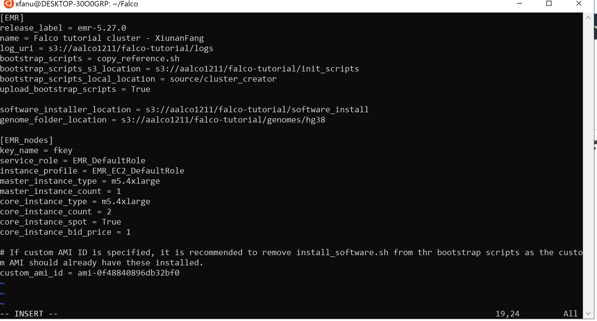

Chapter 6 Run the tutorial
Change to Falco home directory.
cd $Faclco6.1 Give values for S3 bucket and User Name
The tutorial files have a number of locations that have a placeholder called username and yourbucket. Change these placeholders to your values. In a bash shell, from the Falco home directory, edit and submit the following command:[❗️]
# preplace the bracketed sections with your details
sed -i.bak 's/username/[YOUR USER NAME]/g ; s/yourbucket/[YOUR BUCKET NAME]/g' tutorial/*.config
# EXAMPLE ONLY: if your user name if "fred" and your AWS bucket is "falco-test", then you would use the following command
#sed -i.bak 's/username/fred/g ; s/yourbucket/falco-test/g' tutorial/*.configsed -i.bak.reg 's/us-west-2/[YOUR REGION]/g' tutorial/*.config
# change [YOUR REGION] to the name of your region
# EXAMPLE (if your region is us-west-1): sed -i.bak.reg 's/us-west-2/us-west-1/g' tutorial/*.configThe original .config files in the tutorial directory will now have the file extension .config.bak should you wish to restore the original files.
❗First open the file tutorial/emr_cluster.config.
vi tutorial/emr_cluster.configChange the release_label to the latest version:
release_label = emr-5.27.0Change the bootstrap_scripts to only copy_reference.sh:
bootstrap_scripts = copy_reference.shAdding the line in the below:
# If custom AMI ID is specified, it is recommended to remove install_software.sh from thr bootstrap scripts as the custom AMI should already have these installed.
custom_ami_id = ami-0f48840896db32bf0and check that [EMR_nodes] section is similar to the following:
[EMR_nodes]
key_name = yourkey
service_role = EMR_DefaultRole
instance_profile = EMR_EC2_DefaultRole
master_instance_type = m5.4xlarge
master_instance_count = 1
core_instance_type = m5.4xlarge
core_instance_count = 2
core_instance_spot = True
core_instance_bid_price = 1
The [EMR_nodes] section contains a line that starts with key_name =. The computing resources created by the AWS EMR framework uses public–key cryptography to encrypt and decrypt login information. You need to supply your key name here. For example, if your encryption key file is my-key-name.pem, the corresponding line in the configuration file should read key_name = my-key-name. [❗️]Go ahead and edit this entry - enter your key name.[🔴][ Also be aware of the charges that you may incur from AWS for the creation of this cluster. The master instance will be an on-demand type, whilst the two core instances are spot instance types. It is estimated the cost of the cluster for this tutorial, if terminated within 1 hour, will be less than $5 USD. This cost is based on the AWS region us-west-2 - US West (Oregon).
6.2 Launch the AWS EMR cluster
When ready, in the home directory of the Falco code, issue the following command to start the cluster: [❗️]
python3 launch_cluster.py --config tutorial/emr_cluster.configWhen the command is processed, the user will receive a response, of the form:
Cluster has been launched with ID j-1FDPU9CHN79W9Make a note of your cluster ID for future reference.
6.3 Monitor the EMR Cluster
[❗️] Monitor the status of the EMR cluster via the AWS EMR console. When the status of your cluster is Ready, you may proceed with the steps required for completing the analysis.
Click on your cluster to obtain more information about your cluster.
[🔴] Since the nodes that are launched as part of this cluster use AWS spot instance types, it is possible that the market price for the instances exceeds the bid price. If this is the case, then the cluster will not start until the market price falls below the bid price. You can monitor the market price for the spot instances via the AWS EC2 Mangement Console. You can decide if you want to terminate your EMR cluster and either try again later, or modify the bid price in the file tutorial/emr_cluster.config.
6.4 Upload the Manifest file
Falco requires a manifest file to list the FASTQ filenames representing the data input. The required format is a tab delimited text file. This file has been provided for this tutorial and is located at tutorial/data.manifest. Upload the manifest file to your AWS S3 bucket: [❗️]
# issue this command from the Falco home directory
aws s3 cp tutorial/data.manifest s3://[YOUR BUCKET]/falco-tutorial/data.manifest
# replace [YOUR BUCKET] with the name of your bucket[🔴]The following three instructions that launch jobs can be issued one after the other - without waiting for the previous job to finish. The EMR framework will launch jobs in order, and only after the previous job has completed.
6.5 Launch the Split job
The split job takes the original data and splits it into smaller sized files for more efficient processing by Falco. The original input data stored on AWS S3 will not be removed. The modified data will be stored in a new AWS S3 location as specified in the configuration file tutorial/split_job.config. Type the following command at a command prompt in the Falco home directory:[❗️]
python3 submit_split_job.py --config tutorial/split_job.config6.6 Launch the Pre-processing job
In Falco, the pre-processing step is optional. However, for this tutorial, an example pre-processing script is provided, and this step is compulsory to complete the tutorial as configured.
First examine the configuration file tutorial/preprocessing_job.config. The config file specifies which bash scripts are used for the pre-processing. You may wish to also examine these scripts to see how the pre-processing works in this case. Type the following at a command prompt from the Falco home directory: [❗️]
python3 submit_preprocessing_job.py --config tutorial/preprocessing_job.config6.7 Launch the Analysis job
This is the main analysis job that processes the pre-processed data to determine the counts of features. The output be two .csv files: the actual counts of features, and a separate file detailing quality assurance statistics relating to these counts.
The configuration file tutorial/analysis_job.config contains the settings for the analysis job with STAR as the aligner and featureCount for quantification - including any extra parameters for the tools used. The configuration file also specifies the AWS S3 location for the final output .csv files. Enter the following at a command prompt from the Falco home directory: [❗️]
python3 submit_analysis_job.py --config tutorial/analysis_job.config[🔴] To change the alignment and/or quantification tool used in the analysis job, simply modify the aligner_tool and counter_tool option in the analysis configuration file (analysis_job.config).
6.8 Monitor Steps
Note that, as long as the above three steps (split, preprocess, and analysis) are entered in that order, the steps may be entered one after the other - without having to wait until the previous step finishes. The EMR framework ensures that a step does not start until the previously queued step has completed.
[❗️] Monitor the status of each step using the AWS EMR console - in the Step section.
6.9 Monitor S3 files
Use the AWS S3 Console to monitor files in your S3 bucket.
6.10 Download results and Terminate Cluster
To download a file from AWS S3 to your current directory, edit the following command with your details and execute at a shell command line: [❗️]
aws s3 cp s3://[YOUR BUCKET]/falco-tutorial/[YOUR USER NAME]/analysis/samples_expression.csv .
# you can also list all the AWS S3 files that begin with a particular prefix:
#aws s3 ls s3://[YOUR BUCKET]/falco-tutorial/[YOUR USER NAME]/analysis/Alternatively, you could see a listing of the results via the AWS S3 Console by navigating to your bucket and output location.
[🔴]As AWS charges by the hour for usage of its services, the user should terminate their cluster when finished. This is done by selecting your cluster on the AWS EMR console Cluster List, and clicking the Terminate button.